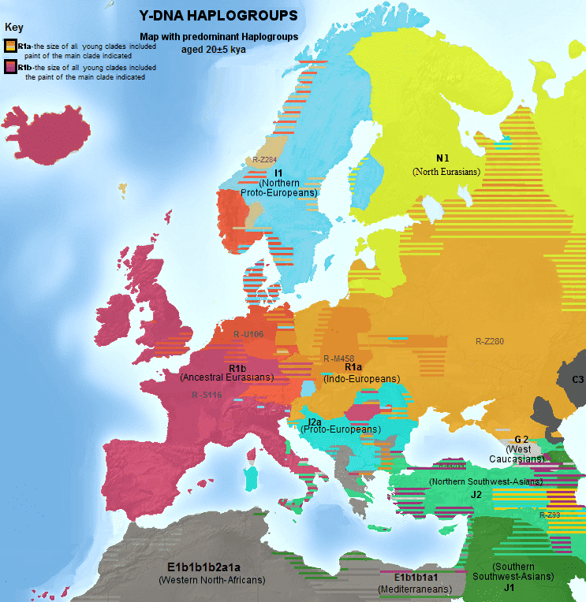

Last Wednesday, Squawker came out with an article concerning the accuracy of DNA testing:
In a recent interview with Cracked, one of the major ancestry testing companies, (which specific company is unknown) spilled the beans on what really happens when you purchase an ancestry kit. While I can’t say I’m surprised, you may be shocked to learn that these ancestry sites aren’t always as accurate as they claim to be. Beyond this, they’ve also admitted to tampering with the result to “screw with racists”.
The usual procedure is that a DNA sample from saliva is processed and categorized, then the results are compared against a database of likely national origins, and a computerized result emerges. However, the real truth is that the results can get massaged.
What might make results different from expected
Since nobody else in the article (or the one it was based on) explained, I will. When conception occurs, half of the father’s DNA and half of the mother’s DNA create a new individual. However, the part of the DNA you get from either parent may unevenly represent your grandparents. It all depends on how the meiosis process randomly divides up your mother’s and father’s pairs to produce the gamete cells which created you. The exceptions are the Y-chromosome (which is patrilineal) and mitochondrial DNA (non-chromosomal DNA inherited exclusively from the mother).
Therefore, if (for example) you’re 75% Irish and 25% French by ancestry, you may test as more French than expected. Meanwhile, your brother might test somewhat less. It’s for this reason why siblings (other than identical twins) resemble each other, but not exactly. Over the generations, this randomly will emphasize parts of some lineages and others may fade into the background. Over historical time, the processes of genetic drift and natural selection give rise to the unique characteristics of nations.
Then there are other possibilities: the milkman from 1952, an adoption that happened a few generations ago, a cute sailor in the 18th century, a foreign merchant who settled down in your ancestral homeland, that sort of thing. It’s mysteries like these which many people find DNA testing to be useful for research. When they chart members of their family tree, they’re certainly looking for accurate answers to the age-old question, “Who’s your daddy?” I could go further and explain the significance of genealogy in Mormon theology, but let’s just say this: if you can’t go out and drink beer on Friday night, what better to do?
Intentionally biased results
The part of the interview in question is the following:
Morgan and his colleagues were caught between a rock and a really-want-to-mess-with-racists place. It would’ve been fun to throw a “10 percent West African” in there, but then they might have a pissed-off, dangerous person at their office, waving a gun. “Since we couldn’t do anything to the results (and we wanted to), what we did was add ‘< 1 percent’ to each African category of ethnicity. That way we weren’t lying, and they would both be wondering how much under a percentage point was. We always try to round to the nearest number because we sometimes hear about percentage points, but for them, we leave it open to whether it’s a one or a zero.”
It’s a compromise that’s elegant in its passive-aggressive simplicity. And it got a result. “The near-N-bomber wrote to us asking what that meant, and we wrote back that it meant it was under 1 percent. And we were not saying zero. Unless they got another test, that was going to bother them. Maybe they weren’t 100 percent Caucasian. I mean, they were, according to the results, but this way it leaves it open, and they’ll always be wondering.”
Well, that’s pretty flippant. They were dealing with clients who were wondering if their natural rhythm was just a fluke, or if they should bite the bullet and learn some good collard green recipes. Their results didn’t indicate any African genetics, but the people at this company—whichever one it is—decided to mess with their heads. They gladly would’ve fooled one of them into thinking he was nearly an octoroon (to use the old term) if they didn’t fear getting shot over the prank.
This is rather like falsely being told your hormone panel says you’re a girl, because your doctor doesn’t like you. Lying to clients is bad customer service, and so is screwing with their self-image. People don’t pay a hundred bucks or more for that kind of treatment. It’s not their job to punish politically incorrect attitudes.
Perhaps they think that putting a little slice of mystery meat into the results is cute. Still, this is no joke. People rely on DNA results not just for family history, but to be notified of possible health concerns. Blowing smoke is not appreciated.
Who is doing this?

Again, the interview doesn’t specify which company is allowing this. It’s also not clear if this is quietly approved by upper management, or just something the munchkins in the cube farm are doing on their own initiative. However, the two possibilities are Ancestry.com and 23 And Me. Will the one responsible for these problems ensure that, from now on, the staff working for them will act responsibly? Let’s hope so.
Other reasons why DNA testing is important

Modern understanding of genetics has allowed for great advances in medical technology, obviously. It would be hard to overestimate its importance.
Beyond that, it enables the migrations to be traced of peoples across the globe during prehistory. Peering back beyond the mists of time, it allows us to piece together the story of the ancient races of mankind during the earliest of prehistory: the interactions of the up-and-coming Cro-Magnons with the Neanderthals (to the detriment of the latter), the Denisovans (contributing a fraction to the gene pool of some Southeast Asians and Pacific Islanders), and a yet unnamed ancient population in Africa.
Franz Boas and his understudies did much to push the “social construction” line in the academic world, as did Ashley Montagu. Even so, genetic research has revealed that humanity is much more diverse than they wanted us to believe. It’s just as well, since the world would be pretty boring if everyone really were the same.
Really, it’s remarkable that race-denialist thought would be found in a genetic research company, of all places. That would be similar to finding firm believers in astrology calculating orbits for NASA. As for those who play pranks with their customers, all they’re doing is discrediting their own business.
Read More: Man Must Pay $30,000 Child Support For Someone Else’s Kid